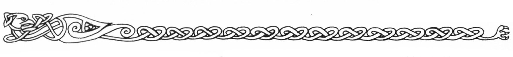

03. Arhem
1. Hamnen
2. Lastkaj, lagerlokaler
Lagren tillhör handelshusen Shakello och Mogger, en sammanslutning lokala köpmän, garnisonen och dvärgarna.
3. Finare kvarter
Höjda över svavelstanken vid floden bor högre officerare, Bodvill Skoffare, Malek Mangus, mfl.
4. Garnisonens förläggning
Garnisonen omges av en fem meter djup grav och en fem meter hög jordvall krönt av spetsiga pålar. Byggnaderna är gediget stenmurade. På taken finns sammanlagt fyra ballistor monterade till luftförsvar. Garnisonen består av ca 300 elitsoldater med officerare. Man har egen smed, skomakare, kock och timmerman. Fogdens bostad finns mitt i området.
5. Marknadsplatsen
På marknadsplatsen håller lokala fiskare och bönder till bland kvurer som säljer karsonfett, hudar och benarbeten. Vid torgets kant ligger bröderna Moggers handelsbod, Grubertin Gråhuds advokatkontor, Bodvill Skoffares kontor, ett öppet kapell helgat åt köldguden Kmorda där Perrima håller till, tullhuset, rådhuset mm. På en sidogata i marknadsplatsens östra ände ligger "Junker Hildurs värdshus".
En äldre tjänsteman i tullhuset är den ende i Arhem som kommer ihåg Fingolf Silverhamre, eftersom denne gav honom en särskilt frikostig muta.
"Det var en trevlig och intensiv ung man, kanske lite nervöst lagd. Han blev visst bekant med en av grönmännen som var här vid den tiden, Gobrudga tror jag att han hette. De är väl norrut nu för tiden."
6. Hantverkarkvarteren
I handelskvarteren finns dvärgsmedjan med dvärgarna Gwellmyn och Bydlo. Vidare finner man skomakare, skräddare, snickare, läkegummor, drogmakare, repmakare, bryggare, slaktare, bagare, krukmakare, färgare, skrivare och konsthantverkare (silversmide, broderi, fingermålning]. Normala hantverkare har följande skicklighet i sitt hantverksfärdigheter:
1T100 kat A kat B FV Köpslå
1-25 8 2 10
16-75 13 3 12
76-95 17 4 14
96-100 20 5 16
Marjuriska hantverkare kräver normalt 150% normalpris av främlingar och gör dessutom ett dåligt arbete.
Lyckas köparen med ett normalt FV Köpslå, gäller normala villkor, men ett nytt slag för färdigheten måste slås för att bestämma pris.
7. Gamla bostadskvarteren
I gamla kvarteren bor bara marjurer. Trakorier som går in i kvarteren blir till 40% överfallna av 1-2 vanliga tjuvar (sidan E 73) eller av 1-4 busar (sidan E 73) . Risken att bli dödad vid dessa överfall är minimal eftersom marjurerna fruktar repressalier. l kvarteren finns krogar och värdshus för lokala resenärer, samt ett par bordeller. Bebyggelsen är tät, gjord i trä och sten.
8. Fiskeläge
Nere vid stranden ligger många små fiskebodar. Båtarna är byggda efter gammal modell, med ett råsegel för medvind och åror vid annat väder. De är bara gjorda för färd längs kusten, är klumpiga men stadiga och bär 300 BEP. Transport kan normalt hyras för 70 km/dag (105 för främlingar som misslyckas med FV Köpslå). På kajen kan man vid dagens slut köpa fisk.
9. Vägen till slavlägret
10. Slavlägret
11. Kvurernas lägerplats
Kvurerna är dåligt ansedda och luktar starkt av karsonfett. De har därför en lägerplats utanför staden där de stannar under handelsresor till Arhem. Normalt finns här 1T20+5 kvurer från olika stammar (20% chans för att kvurern Umma är där). De säljer gärna till alla som kommer till platsen.
12. Utkikstorn
Högst upp på södra stadsberget finns ett 25 m utkikstorn besatt av två soldater och en ballista.
13. Sjukstuga & 14. fattighus
För att bättra på sitt skamfilade rykte finansierar shaguliterna dessa två välgörenhetsinrättningar i staden. De drivs helt av vanliga människor, men sekten står för alla löner och driftskostnader. Det är huvudsakligen trakorier som utnyttjar institutionernas verksamhet. Marjurerna ser med stark misstänksamhet på shaguliterna och föredrar att ta hand om sina egna, framför att släppa dem innanför dessa institutioners dörrar. Sulidon Rumperlak besöker dgaligen sjukstugan.
Hur reagerar folk i Arhem på förfrågningar om Shaguliterna?
Marjurerna anser shaguliterna vara en sekt onda magiker som har övernatuliga kontakter, vandrar omkring osynliga, läser folks tankar m m. Under åren har de sett shaguliternas fiender försvinna eller dö oförklarligt. De hyser därför en vidskeplig fruktan gentemot sekten och vill ogärna tala om den ens i enrum (jfr "bybornas" relation till greve Dracula i klassiska filmer — dvs att ondskan kan framkallas genom att nämnas vid namn).
Kvurernas inställning förklaras i avsnittet om detta folk.
Trakorierna accepterar sekten som en excentrisk, men oförarglig munk— och magikerorden. De skrattar åt marjurernas vidskepelse och bagatelliserar de instinktiva obehag man känner inför en shagulit. Eftersom sekten inte stör, utan tvärtom delar ut mutor och tjänster åt ockupanterna får den vara ifred. Dessutom dämpar den öns urbefolkning.
Dvärgar och jättar anser bara att shaguliterna gör vad man kan vänta sig av människor. Man bör undvika dem för att inte smutsa händerna, alternativt slå till hårt som mot en galen hund.
Shaguliteranhängare svarar med schablonartade banaliteter på frågor om sekten, men skyndar sig sedan att informera sina uppdragsgivare, som vidtar åtgärder efter vad situationen kräver.
Slumpmässiga möten och händelser i Arhem
Listan kan användas som tips till SL, eller direkt som en slumptabell. När den ska användas är helt och hållet upp till SL.
1T20 Händelse
1 En mörk skugga sveper över staden. Folk kastar sig skräckslagna i skydd. Draken Blatifagus cirklar över takåsarna på ett par hundra meters höjd innan han försvinner åt SO.
2 En intensivt ljus kula viner tätt över hustaken åt garnisonen till (Trodax på ingående via LJUSVÄG).
3 En lätt berusad Abrelax + 1-4 slavdrivare vinglar mot rollpersonerna. De är uppretade och söker gräl.
4-7 En stadspatrull stoppar rollpersonerna för att se vilka de är.
8 En rollperson råkar stöta till Malek Mangus på stan. Shaguliten fräser: "Se upp bondtölp!"
9 En sårad rebell rusar i famnen på en rollperson med soldater tätt efter sig.
10 En eldsvåda utbryter någonstans i staden. Rollpersonerna ser ett litet barn, omringat av elden.
11 Rollpersonerna hittar Ronald Mogger, Sulidon Rumperlak eller Gistacki nästan medvetslöst berusad i en gränd.
12 Rollpersonerna ser hur Miritti Ornetand blir antastad av några slavdrivare på ett skumt ställe.
13-15 En ficktjuv försöker vittja någon rollpersons fickor.
16 Rollpersonerna ser några fulla soldater antasta Gizmo Mogger i en mörk gränd.
17 Råbald Niding stjäl ett får från en gård i stadens utkant. Rollpersonerna tar honom på bar gärning.
18 En av rollpersonerna får plötsligt ett rapp av Bodvill Skoffares livvakt, då köpmannen går genom staden.
19 1-2 utsvultna pälsödlor anfaller någon i rollpersonernas åsyn.
20 Rollpersonerna stöter i kvällningen på Guster Svartskäkta och hans kumpaner, dragandes en kärra pälsar mot hamnen.
Ett rykte på värdshuset
På "Junker Hildurs" pratar många om ett otrevligt dödsfall och ett par försvinnanden som inträffat den senaste månaden. Resterna av en död fiskare hittades nere på stranden sedan han gått för att dra upp båten i kvällningen. Hela överdelen av kroppen, från naveln och uppåt, saknades som om den blivit lösskuren, medan bålen och benen var helt oskadade.
De flesta tror att en hungrig pälsödla överraskat mannen från ovan, eftersom inga spår hittats runt kroppen, men många rutinerade jägare säger att pälsödlor alltid flyger iväg med sitt byte till någon högt belägen klippa innan de åter.
Två personer är som uppslukade av jorden. Kabristo, en trakorisk underofficer, försvann spårlöst under en övning i skogarna norr om Arhem. Dessutom saknas en marjurisk bonddräng.
SL: Fiskaren blev överfallen och delvis uppäten av en vild horndemon. Kabristo är fånge hos shaguliterna medan drängen har rumt med ett handelsskepp.
Värdshuset Junker Hildurs
Värdshuset är det enda I Arhem som står öppet för främlingar. Det är beläget strax öster om marknadsplatsen. "Junker Hildurs" besöks av både trakorier och marjurer och har blivit den främsta kontaktplatsen mellan olika grupper i Arhem, ett naturligt ingenmansland, där motsättningarna tillfälligt läggs åt sidan. Hit söker sig många för meningsutbyten, skvaller, affärsuppgörelser och förströelse. Till och med kvurer släpps in om deras lukt inte är för påtaglig.
1. Vapenstugan och storsalen
ÖVERBLICK: Utanför ingången hänger en träskylt med en flinande galt, vars ena huggtand är förlängd och krökt i spiral. Man passerar vapenstugan, där skrymmande kläder, större vapen och andra grovting lämnas.
I storsalens mitt brinner en stor eld, dit gästerna slänger ben, potatisskal och annat skräp. Från taket nära rökhålet hänger några fårskankar på rökning. Det finns sex bord, runda eller avlånga, i rummet. Borden och tillhörande bänkar är hopslagna av grovhuggen fur. Golvet är hårdstampad lera, strödd med vitträflis.
Kvällstid år stämningen i salen uppsluppen och grov, men oftast kontrollerad.
VARELSER: Gäster en vanlig kväll:
0-5 Bönder på marknadsresa
0-3 Dagdrivare eller prostituerade
50% 1-4 trakoriska soldater
30% 1-2 vanliga tjuvar (enl sid E 37)
20% Guster Svartskäkta
5% Snapphannarna
25% Dvärgen Gwellmyn med någon bekant
50% 1-6 slavdrivare, varav 80% chans Abrelax
30% Ronald Mogger + 20% chans för någon farbroder
20% Sulidon Rumperlak
30% Shulaban
Helgdagsaftnar är chanser och antal fördubblade.
SL: Stamgästerna tål inget våld eller svineri. Blir det bråk kallar värdshusvärden på en stadspatrull som kommer inom 1-6 min.
2. Sovsalen
ÖVERBLICK: Går man uppför ett par breda trappsteg når man sovsalen där logi kan erhållas. Mitt i rummet brinner en eld. Totalt tio sovlådor finns i rummet. Vid främre pelaren står en vattentunna med en skopa i.
DETALJER: Valje bädd är utformad som en kista vars lock består av en öppen låda där gästen sover. I själva kistan, som kan låsas med hänglås, förvarar gästen sina ägodelar. Man bäddar med halm och drar en fäll över sig till natten.
VARELSER: Det finns några äventyrare beskrivna som kan placeras i sovsalen efter behag. SL kan också hitta på egna.
SL: Kost och logi kostar normalt 12 sm/dygn. Sovlådornas hänglås tål 15 KP och har SG 5.
3. Familjen Ornetands bostad
ALLMÄNT: Bostaden består av ett kök, skafferi, kammare och sal. Dörren till värdshusets storsal är nattetid låst med hasp.
DETALJER: Under klädkistan i sovkammaren finns en golvlucka ner till ett hemligt utrymme. I en kista förvarar Hildur Ornetand där några gamla marjuriska frifanor, sin stridsyxa och ett sjöormspansar, liksom en påse blandade halvädelstenar för totalt 1450 sm.
VARELSER: I sovkammaren sover Hildur och Osora Ornetand. I köket sover gycklaren Moska, och i salen dottern Miritti.
Hildur Ornetand — värdshusvärd
Hildur Ornetand var en gång den mest fruktade frihetskämpen på Marjura, men det blodiga kriget mot trakorierna gav honom avsmak för våld. Nya tider hade kommit och han la ner sin yxa istället för att fortsätta det meningslösa dödandet.
Hildur har stort anseende bland marjurerna i Arhem och sitter i stadens råd, men respekteras också av trakorierna, och känner till det mesta som händer i staden.
UTSEENDE: 46 år. En tjuraktigt massiv kropp och spretigt, rött hår. Klädd i ett solkigt läderförkläde och blekta yllekläder. Blicken är alltid stadig och värderande, dragen i övrigt fårade, men inte slappa. I pannan har Hildur ett långt ärr efter ett skärsår. Han tuggar gärna tobak så att läpparna är solkiga.
KARAKTÄR: Värdshusvärden tycker om att alltid ha något för händer och sätter sig bara ner om det blivit lugnt omkring honom. Trots detta är han en uppmärksam lyssnare, ger ofta kommentarer och råd som stammar från gott huvud. Mest av allt ogillar Hildur när någon skryter med stridsbravader. Han muttrar då tex: "Den som lever av svärdet ska förgöras av svärdet", och går till andra bestyr.
Hildur har hjälteförmågan "Stålblick", som kommer fram då han blir riktigt uppretad.
SL: Hildur Ornetand tar bara till vapen om någon i hans familj hotats eller skadats, men är då en fruktansvärd hämnare.
Osora Ornetand
ALLMÄNT: Osora är Hildurs maka. Hon är en mager, tystlåten kvinna som plågas av reumatism och därför sällan visar sig i värdshuset. Istället sköter hon bokföring och inköp. Dessutom är hon en klok läkegumma. Hon är 53 år.
FÄRDIGHETER: Läsa/Skriva 3, Räkna 4, Hantverket vävning 4, Läkekonst 18, Läkedrogkunskap 16, Botanik 16.
Miritti Ornetand
ALLMÄNT: Miritti är värdshusvärdens dotter och hjälper till med serveringen på kvällarna. Hon är gladlynt, pratsam och vacker, vilket medför att Hildur ständigt håller ett öga på henne.
Miritti kan mycket lätt falla i romantiskt svärmeri över någon karismatisk, yngre äventyrare, eftersom hon är ganska less på att "hållas inspärrad vid världens ände".
Moska — gycklare
ALLMÄNT: Gycklaren Moska hade en vacker vision om att glädjen borde spridas där den mest uppskattas, men hans milda och drömska sinne klarade inte svaveldalens hårda verklighet. Paret Ornetand tog hand om honom då han tänkte ta sitt liv. De ger honom kost och logi mot underhållning för gästerna och hjälp i hushållet.
UTSEENDE: Liten och spinkig som en insekt. Tunt, ljust, axellångt hår. Ansiktets drag är fina, huden blek och tunn som rispapper. Moska ler alltid, ett nervöst konstlat leende och flackar över omgivningen med blicken. Han klär sig i en rödblå gycklartunika och vit hermelinpälsbasker.
KARAKTÄR: Moska spelar mandolin och krumhorn, oftast burlesker eller tårdrypande ballader om olycklig kärlek. Han har FV Sjunga och spela 4 med sina intrument. Problemet är gycklarens dåliga nerver. I avspända stunder när publiken är med honom kan han höja sig till oanade nivåer, men om åhörarna skriker, hotar eller kräver för mycket blir han fumlig som en nybörjare. Speciellt rädd är han för slavdrivarna och i synnerhet för Abrelax, som aldrig låter honom vara i fred.
Rurik Ornetand — 22 år, dräng
ALLMÄNT: Rurik är paret Ornetands son. I veckorna tjänar han dräng på sin morbrors gård norr om Arhem, men på helgerna hjälper han till på värdshuset.
UTSEENDE: Atletiskt byggd. Grova drag med flätat rött hår och stubbat skägg.
KARAKTÄR: Rurik är stolt och något fåfäng, har ett hetsigt sinnelag som gör honom otålig och fallen för snabba, drastiska, men ogenomtänkta lösningar. Principiellt föraktar han alla trakorier. Rurik glömmer aldrig en oförrätt och ser hämnden som var mans plikt.
Komplikation — rebellerna
Rurik Ornetand är inblandad i en hemlig befrielserörelse med ett sextiotal medlemmar. Gruppens mål är att på sikt befria Marjura från ockupanterna.
Om rollpersonerna på något sätt tar parti för marjurer mot trakorier kommer Rurik försiktigt att närma sig för att se om rollpersonerna är intresserade av att delta i kampen. Händelser som kan utlösa kontaktförsöket är tex:
- Rollperson försvarar marjurer eller Moska mot Abrelax trakasseri.
- Rollperson hamnar i bråk med trakoriska soldater.
- Rollperson blir dömd till något straff av trakorierna.
- Rollperson blir illa behandlad av trakoriska soldater.
Om SL vill kan han provocera fram situationen genom att låta Abrelax hota gycklaren Moska med stryk framför näsan på rollpersonerna, eller låta en sårad rebell ramla i deras armar, förföljd av soldater.
Naturligtvis behöver spelarna inte ta rebellernas parti. Förråder de befrielserörelsen eller aktivt ingriper mot denna, kommer rebellerna och Guster Svartskäkta att söka hämnd. Förråder de Rurik personligen, kommer Hildur Ornetand att ta hämnd.
Rebellerna har som mål att ställa till kaos och att sabotera svavelhandeln på tex följande sätt:
- Förstöra slavlägrets zombinlager och befria Guzier da Ollach.
- Reta upp draken Blatifagus och mörda Trodax Draconicus.
- Decimera trakorierna på annat sätt.
Huset Moggers handelsbod
ALLMÄNT: Moggers är en trakorisk släkt vita ankor som länge sökt komma in på den lönande svavelmarknaden och bryta handelshuset Shakellos monopol. Ankorna driver en handelsbod med varor för kolonins trakorier.
Sortiment och priser
- Enklare varor av trä, metall, skinn, tyg och sten som kan tillverkas på Marjura av befintliga råvaror — normalt pris.
- Importerade, enklare varor — tredubbelt pris.
- Arktiska specialiteter —— halva normala priset. Dock säljs karsonfett i tiondelar av en dos som finns på sidan M 46. Vanligtvis stryker men bara fettet på utsatta kroppsdelar som fingrar och ansikte. En tiondels dos räcker då till fem tillfällen.
- Bara varor som någon normalt köper hålls i lager. Eftersom soldaterna tjänar mycket pengar som inte kan spenderas finns det ganska mycket onödigt "krims-krams". Det år 4% chans att något mer speciellt finns i lager.
- Man kan beställa varor från Trakorien, men leveranstiden är ett år. En annan möjlighet är att låta tillverka föremålet på platsen.
Asimund & Gizmo Mogger — köpmän
ALLMÄNT: Asimund och Gizmo är ett par rutinerade köpmän ur den stora anksläkten Mogger. De ser en styrka i att sprida sitt kapital på många olika verksamheter och kan därför tänkas investera i nya intressanta projekt, även om huvudmålet är att komma in på svavelmarknaden. Bröderna tar gärna emot andra trakoriska vita ankor som sina gäster mot att få höra det senaste från civilisationen.
Vita ankor handlar till halva priset i handelsboden och kan bo hos Moggers så länge de stannar i Arhem. Bröderna lånar också ut upp till 300 gm utan säkerhet eller ränta om de förstår att gästen har pengabekymmer. Observera att denna gästfrihet gäller vita ankor personligen och inte deras sällskap som helhet. Vita ankor som missbrukar vänligheterna eller försämrar artens renommé tar de genast avstånd ifrån.
UTSEENDE: Bröderna Mogger klär sig alltid smakfullt, gärna i enfärgade, ljusa sidendräkter med silverbrodyrer och bårder i vit mink. På huvudet bär de vit pälsbasker. Deras ålder visar sig i kraftiga polisonger och näbbens fårade horn.
KARAKTÄR: Bröderna vet alltför väl att andra, större arter ofta föraktar vita ankor och uppträder därför alltid korrekt och diskret. De talar lågmält och sakligt, men sänker sig aldrig till inställsamhet, eftersom deras goda kapitalreserver trots allt ger dem ett visst inflytande.
Ronald Mogger — 23 år, köpmannalärling
ALLMÄNT: Bland ankor brukar ungarna uppfostras av föräldrarnas syskon. Ronald Mogger har därför skickats som lärling till sina farbröder på Marjura.
UTSEENDE: Ronald är mycket modeintresserad och klär sig i bjärta kläder, gärna smaklösa blandningar av skarpa färger, glittrande glas, metallbleck och annan billig grannlåt. Han fäster färgglada fjädrar i stjärtplymen, som då liknar ett påskris, och plockar sig runt näbben enligt senaste paratorniskt mode, men slarvar ofta så att fjäderstubben står som pinnar ur ansiktet.
KARAKTÄR: Ronald fördriver mest tiden med att spela hasard, dricka lemonad och pladdra med den som orkar lyssna. Han är pigg på allt som ger snabba pengar så länge det inte är alltför brottsligt, farligt eller arbetsamt.
Till karaktären är han lat, skrytsam och fåfäng, tycker sig vara den enda civiliserade ankan bland bönder och vildar.
SL: Vita ankor som tar emot bröderna Moggers gästfrihet förväntas ta hand om Ronald så att denne får lära sig något om livets allvar.
Handelshuset Shakello
Handelshuset Shakello är en solid sammanslutning av trakoriska, adliga finansiärer och förslagna borgare. Huset har gott anseende och god ekonomi som bygger på trygga men tråkiga investeringar. Huset har kontrakt på 85% av allt svavel som lämnar Marjura men kontrollerar också delar av den fria kvoten genom bulvaner. På Marjura representeras handelshuset av Bodvill Skoffare, som har ett nära samarbete med fogden, herr Gottard.
Bodvill Skoffare — 45 år, köpman

UTSEENDE: Liten, mager och senig med blek, vaxartad hud. Grå, obehagligt vassa ögon. Skoffare klär sig förnämt och korrekt i sammet och ädelpäls.
KARAKTÄR: Skoffares kräsna ögon lägger bara märke till andra rika eller inflytelserika människor, medan han betraktar vanligt folk och i synnerhet omänskliga varelser som boskap. Speciellt ogillar han vita ankor och "äventyrare", dvs dagdrivare utan bildning, yrkeskunskaper, pengar eller härstamning. Bodvill Skoffare ogillar all form av humor och i synnerhet då det gäller affärer.
SL: Bodvill har alltid 1-2 livvakter (se sidan E 73) med sig för att hålla undan slöddret då han rör sig i staden. Vill man träffa honom måste man först tala med, och godkännas av, hans skrivare Maxur, vilken måste mutas på rätt sätt. Av rollpersonerna kan Skoffare tänkas köpa dyrare värdeföremål/magiska ting till 30% underpris. Han kan tänkas låna ut pengar till kända adelsmän mot säkerhet och till hög ränta (10%/mån).
Dvärgarna
Uppe i de otillgängliga bergen några mil öster om Arhem ligger dvärgstaden Bethra Zur med sina smedjor och malmbrott. Inga främlingar släpps i närheten av grottorna, men eftersom dvärgarna handlar med människorna i Arhem, driver de en smedja i staden. Smedjan finns i en urholkad klippa i hantverkarkvarteren. Dvärgarna Gwellmyn och Bydlo bor i en angränsande klippkammare.
Varor från dvärgsmedjan
Rollpersonerna kan försöka handla direkt från dvärgarna varvid Gwellmyn sköter alla kontakter med kunderna. Denne vill alltid ta god tid på sig att diskutera affären över ett stop öl eller te på lavar. Under samtalet förhör sig Gwellmyn om hur mycket man tänkt betala, vilken vana vid vapen man har etc.
Dvärgarna säljer bara sina föremål till seriösa köpare, och alltid till den som personligen ska bruka tinget. Deras största sorg är gott smide Kastat för svinen.
Det finns tre kvalitéer:
Brukssmide: Föremålet är formskönt och av mycket god kvalitet jämfört med vanligt människosmide, men har inga speciella egenskaper, förutom att vapen har brytvärde ökat med 1. Föremålen säljs till 150% normalpris. Som köpare accepteras alla som inte är direkt olämpliga eller oförskämda.
Mästersmide: Av denna Kvalitet smider man bara föremål som ska brukas med precision under långa tider (dvs mer än 200 år). Exempel är gruvborrar, kedjor till vindbryggor, gångjärn till större portar etc. Också vapen och skydd tillverkas i denna kvalitet. Mästersmidda vapen har brytvärda +4 och skada +1. Sköldar och rustningar har abs +1.
Föremålen säljs normalt bara till goda vänner eller dokumenterat goda yrkesmän till femdubbelt normalpris. Varje smide präglas med smedens mästermärke.
Dvärgsmide: Äkta dvärgsmide är de yppersta föremål som tillverkas på jorden. Varje sådant föremål tillverkas för ett speciellt ändamål, graveras med sitt personliga namn och smedens dubbla mästermärke.
Själva arbetet tar vanligen 1—6 månader och kostar tio till femton gånger det normala priset. Därtill kommer kostnaden för speciellt material och för utsmyckning, tex mithril, silver och ädelstenar. Mithrilföremål är alltid dvärgsmide.
Föremålen, vanligen vapen eller släktklenoder, tillverkas bara åt furstar, hjältar och häxmästare för förtrollning. Dvärgsmidda vapen har BV +8 och +1 på CL och skada genom sin utsökta balans. Sköldar och rustningar har abs + 1.
Dvärgsmeder har ett nästan religiöst förhållande till sitt arbete. Man anser att malmen redan i berget har sitt förutbestämda öde som fullbordas då det smidda tinget tjänat ut. Därför smider man mycket ogärna om ett trasigt föremål. Man återlämnar det vanligen till jorden genom att begrava det som en avliden vän.
De bergtagna
Bland dvärgar händer det att små barn försvinner spårlöst i berget för att lika mystiskt dyka upp långt senare som vuxna. Ingen vet var de har varit, men dessa bergtagna står i mystisk förbindelse med malm och sten och hålls för heliga bland dvärgar.
De bergtagna har automatiskt färdigheter motsvarande perfekta slag i följande färdigheter: Geologi, Grottorientering och Överlevnad—berg.
Vidare kan de när som helst frammana 1-4 gnomer E3 och passera som med besvärjelsen JORDVÄG genom sten och metall. Vapen gjorda av mineral eller sten passerar deras kroppar utan att göra någon skada. Egenskaperna beror inte på magi, utan på ett samförstånd med själva materien.
Smideskonsten motsvarar FV 5+, en nästan övernaturlig förmåga att forma metaller till praktiska och sköna ting. Istället saknar de bergtagna andra egenskaper. De lever i sin egen tillvaro utan att förstå eller bry sig om andra varelser, vilket kunde tolkas som en sinnessjukdom av de ovetande. En bergtagen dvärg går inte att hota eller övertala, han känner ingen smärta eller kärlek utan går sin och bergets väg. Möjligen kan han kommunicera hjälpligt på teckenspråk med sina närmaste.
Gwellmyn — dvärg
UTSEENDE: Milda vänliga drag med långt, vitt skägg som han brukar fläta med silvertråd. Han klär sig i rejäla kläder av päls och brunrött läder, med en stor huva som döljer ansiktet då han rör sig ute. Gwellmyn röker ofta en jättelik sjöskumspipa. Vid bältet hänger en vacker handyxa som han ofta petar naglarna med under samtal.
KARAKTÄR: Lågmäld och sympatisk, men med ett stänk av okynne. Gwellmyn älskar ordlekar, tvetydigheter och att hålla åhörarna i spänning. I affärer är han alltid mildsint, men envis som en åsna.
Bydlo — dvärgsmed
UTSEENDE: Mycket mörk och kraftig. Klär sig i grova yllekläder och läderförkläde.
KARAKTÄR: Bydlo är en av de bergtagna (se dito) och därför världsfrånvänd och obegriplig för vanligt folk. Han reagerar på tilltal genom att peka på öron och mun, varefter han ignorerar besökaren och fortsätter att arbeta. Han lämnar inte smedjan utom i sällskap med Gwellmyn. Kvällarna tillbringar han med att fingra på sina malmstycken för att höra vad de vill bli.
Shaguliterna i Arhem
I Arhem finns bara en riktig shagulit, vars uppgift är att förse sekten med slavar och varor, och att bevaka sektens intressen i övrigt.
Malek Mangus — 55 år, shagulit
ALLMÄNT: Malek Mangus är en ansedd gäst hos fogden som han smörjer med gåvor och tjänster. Genom vänskapen har fogden fått uppfattningen att shaguliterna är en fredlig samling excentriska människor som sökt största möjliga avskildhet i Dymrabergen för att i lugn och ro syssla med lärda efterforskningar. Talet om människooffer och förbjuden magi har Mangus förklarat bort som vidskepelse.
UTSEENDE: Mangus är draperad i svartvioletta sammetssjok. En vit benmask täcker "av religiösa skäl" hans ansikte, och händernas gröna hud gömmer sig i svarta handskar. Han nyttjar starka parfymer för att dölja en obehaglig kroppslukt.
Bakom masken finns inget riktigt ansikte. Näsa, läppar och behåring saknas helt. Istället finns en slät, grön yta med två ögon, ett enda näshål och en munspringa med solida emaljlister istället för tänder.
KARAKTÄR: För att bibehålla fogdens goda inställning uppträder Malek Mangus alltid korrekt, men kallt mot folk i Arhem. Han använder heller aldrig magi om det kan upptäckas utan kontrollerar sig ut i fingerspetsarna. Hela tiden agerar han i sektens intresse helt utan vanlig mänsklig hänsyn.
Andra SLP
Grubertin Gråhud — 61 år, advokat
ALLMÄNT: Gråhud är en trakorisk, lagkunnig skrivare som känt vittring av goda affärer på Marjura. Hans kontor ligger vid marknadsplatsen i Arhem. I första hand sköter han shaguliternas intressen, men han åtar sig gärna andra lönsamma uppdrag som extraknäck.
UTSEENDE: Tunnhårig och med grodlikt ansikte. Ganska fet. Klär sig korrekt och diskret. Ett obehagligt, påklistrat leende spelar hela tiden över hans ansikte. På högerhanden har han en signetring som han signerar dokument med.
KARAKTÄR: Listig och girig, men med spelad yrkesstolthet. Gråhud bemöter alla försiktigt, tills han vet vilken ekonomi och social status de har.
SL: Gråhuds pris är ca 120 sm/dags arbete + tillägg för mer riskabla eller olagliga tjänster. Det finns 25% chans att shaguliterna får reda på allt som anförtros advokaten. Chansen minskar med mutor.
Shulaban "Ormtunga" — 34 år, tjuv
ALLMÄNT: Shulaban är shaguliternas handgångne då det gäller diskreta olagligheter. Han har ett antal busar och tjuvar i Arhem att ta till sin hjälp.
UTSEENDE: Liten, senig figur med kvicka, uppmärksamma ögon. Mörkt, flottigt hår med högt hårfäste. En silverring i högra örat. Sluddrigt tal. Klär sig så att han smälter in i omgivningen.
DETALJER: Tungan är kluven som på en orm.
KARAKTÄR: Pratsam och gladlynt. Slår sig gärna i slang med främlingar för att se vilka de är och vad de har för värdesaker. Han bjuder då på ett glas, berättar historier, slår den andre på axeln, dunkar i ryggen etc och registrerar allt han ser eller kan känna. Detta ger honom också en möjlighet att bestjäla sin "kompis".
Shulaban går att leja för olika uppdrag och är intresserad av allt som kan ge snabba pengar.
SL: Shulaban dömdes en gång att mista tungan då han ertappades som tjuv, men han mutade bödeln att klippa den på längden i stället. Det är 80% chans att shaguliterna får reda på allt som anförtros Shulaban.
Tobik — Dold yrkesmördare och spion
ALLMÄNT: Om SL har lust kan han använda sig av den hemlighetsfulle mördaren med kodnamnet "Tobik". Denne skiljer sig en del från vanliga SLP. Tobiks uppgift är att bevaka shagulitersektens intressen och hans lojalitet är hundraprocentig. Till vardags fungerar Tobik som en vanlig medborgare och bara Malek Mangus och de tre shaguliterpatriarkerna känner hans identitet. Om rollpersonerna är på Marjura med motivet "heligt uppdrag", känner de till att Tobik antagligen röjt ett par andra utsända ur vägen eftersom dessa försvunnit spårlöst.
SL bestämmer Tobiks rätta identitet genom att välja en av nedanstående:
Hildur Ornetand Moska Asimund Mogger Sulidon Rumperlak Bodvill Skoffare Umma Abanazer Trodax Draconicus
Då identiteten är vald bör SL lägga till följande färdigheter: Bluff 25, Upptäcka fara 20, Dolk 20.
Vidare bör Tobik ha INT 18 och Karisma 16. Tobik har via Malek Mangus tillgång till droger från Sulidon Rumperlak. Han får också all hjälp och all information Mangus kan ge.
Tobiks beteende måste modifieras en del. Han är intresserad av att lära känna alla främlingar och av att vinna deras förtroende, men han vill inte verka misstänkt nyfiken. Målet är att finna ut om främlingarna är fiender till shaguliterna och i så fall vem som har skickat dem, vilka de är etc.
Om nykomlingarna är potentiellt farliga söker han röja dem ur vägen genom ett pålitligt gift eller ännu hellre genom att lura dem i ett bakhåll eller i en fälla utan att själv avslöjas.
Kom också ihåg att Tobik inte spelar sin rätta identitet, utan är denne till vardags. Han röjer sig bara om sektens hela framtid står på spel, men inte för att rädda en enskild medarbetare. Alla eventuella läckor i organisationen söker han diskret tysta.
Några äventyrare på värdshuset
Abenazer — 39 är, munk
ALLMÄNT: Munken Abenazer är en världsresenär som vandrar omkring för att lära känna människornas rätta förhållande till omvärlden. De senaste åren han han tillbringat i Clusta Noba på östra Marjura som lärare på en stiftelse för fysisk fulländning. Från denna bas har han gjort många resor i området. Han är välkänd och respekterad, men reser i tysthet under enkla former.
UTSEENDE: Gråspräckligt hår och väderbitet ansikte med lugna behagliga drag. Utstrålar en faderlig trygghet och onåbarhet. Abenazer rör sig smidigt och ändamålsenligt utan att ta stöd på vandringsstaven. Han klär sig i enkla, men rejäla och rena, grå yllekläder.
KARAKTÄR: Abenazers ideal är att iaktta utan att verka. Han vill låta världen drabba honom utan medveten styrning, och fattar därför bara spontana beslut grundade på intution. Faller det honom in följer han med rollpersonerna för att studera deras beteende och försvarar gruppen om den råkar i fara, men tar inga egna initiativ och vill inte ha del i några skatter. Han är en god iakttagare med intuitiv förståelse av sammanhang.
Abenazer bemöter alla han träffar med vänlighet, men talar ofta kryptiskt. Han har hjälteegenskapen "Språkets gåva" (sidan E 65).
SL: Abenazer bär inga pengar, men får lätt kredit eller betalar med en berättande sång. Munken kan kastas in som förstärkning om rollpersonerna ligger illa till. Han tycker om att väga upp styrkeförhållanden så att utgången är oviss.
Gistacki — 27 år, brottare
ALLMÄNT: Gistacki har en bakgrund som uppvisningsbrottare i staden Soblak på den trakoriska ön Palamux, där han en tid var omåttligt populär. I sitt övermod skröt han om vilka stordåd han hade utfört på sina påhittade resor. Borgmästaren i Soblak, som var en godtrogen gammal man, tog Gistacki på allvar och bad honom högtidligt nedgöra en kringvandrande jätte som terroriserade landsbygden. Gistacki rustade sig visserligen och drog åstad under folkets jubel, men vågade aldrig gå i närheten av jätten. Nu vandrar han planlöst omkring utan att våga sig hem. I Lasemos slog han ner en ädling som kände igen honom, och fick hugga sten i tre månader. Där träffade han Robur Rödvad och slog följe med honom.
UTSEENDE: Påfallande vackra och manliga drag. Mörk hårstubb och stubbat skägg. Klädd i ganska sjaskiga yllekläder. Stor och bastant, men rör sig smidigt.
KARAKTÄR: Sörjer bittert sitt sköna liv i Soblak och dränker gärna sorgen i vin, som han tål dåligt. Stolt och snar till våldsamheter om han retas, även om han blivit försiktigare sedan slagsmålet i Lasemos. Gistacki skulle gärna utföra ett stordåd för att reparera sin sårade självkänsla, men är samtidigt ganska harig.
Robur Rödvad — 32 år, mångsysslare
Robur Rödvad är en skuggornas livskonstnär som vet att njuta då tillfälle bjuds. Han har ständigt nya projekt på gång som ska ge storkovan, men det vill sig aldrig riktigt.
Nåväl, Robur tar varje motgång med en klackspark och planerar redan för nästa försök. Då han för en mindre förseelse avtjänade straff jämte Gistacki såg han omedelbart brottarens möjligheter, och utnämnde sig själv till dennes manager.
UTSEENDE: Smalt, råttliknande ansikte med en knäck på näsbenet. Bär en stor, svart slokhatt över sitt lingula stripiga hår. Kroppen är tunn och senig, klädd i så fina kläder som han för tillfället har råd med.
KARAKTÄR: Rödvad tänker och talar dubbelt så fort som normala människor, och när han tänker, tänker han på sig själv. Han gillar sällskap, men är bara nöjd när han kan smyga åt sig lite mer än kamraterna.
SL: De två lycksökarna är på Marjura för att ryktena om gravguldet nått till deras öron.
Guster Svartskäkta — 42 år, krigare & smugglare
ALLMÄNT: Guster Svartskäkta kämpade vid Hildur Ornetands sida mot de trakoriska angriparna när Marjura invaderades. Också Guster förstod snart att kampen var meningslös, men till skillnad från värdshusvärden kunde han inte lära sig leva med inkräktarna. Nu ägnar han sig åt smuggling. Han och hans kumpaner fraktar i hemlighet ut svavel, pälsar, dvärgvaror och annat till hamnen i Clusta Noba, varifrån det skeppas vidare söderut. Guster köper i hemlighet svavel av Abrelax i slavträsken.
Han har också affärer med dvärgen Gwellmyn, advokat Grubertin Gråhud, tjuven Shulaban och den fredlöse jätten Råbald Niding, liksom med de rebelliska fritänkarna, även om han inte deltar aktivt i de senares frihetskamp. Däremot har Guster inget samröre med shaguliterna och kan inte övertalas till något sådant.
När han inte reser i skumma affärer, bor han hos en prostituerad kvinna i Arhem eller hos sin bror på en gård norr om staden.
UTSEENDE: Guster Svartskäkta klär sig i mörka yllekläder med höga fältstövlar och bred slokhatt. Huvudet är skalligt på toppen, men har stripigt, brunt hår längs sidorna, flätat till en hårpiska i nacken. Mannens ögon är blekt ljusgrå och har en obehagligt genomträngande blick. Dragen är grova och täckta med gråbrunt kort skägg. Ofta tuggar han tobak och spottar bruna loskor där han går. Hunden Byrax följer Guster vart han går. I vildmarken är han alltid väl rustad.
KARAKTÄR: Från början var Guster ingen ond man, men hatet har förblindat honom. Besvikelsen över Marjuras stulna frihet gör att han ständigt söker hämnd på alla främlingar. Blir han det minsta provocerad av utlänningar, vitnar ansiktet och han går stelt undan för att lugna ner sig. Han kan därefter följa efter äventyrarna för att plundra dem i vildmarken eller ange deras planer för fogdens folk.
Till vardags är Guster bitter och sur, men känd som en god patriot.
SL: Guster Svartskäkta kan användas för att leda en konkurrentgrupp till rollpersonernas sällskap. Han har ofta med sig 1—6 tjuvar och busar. Beroende på omständigheterna eller för att väga upp oddsen, kan han samarbeta med Abrelax, Gistacki och Robur Rödvad, Shulaban eller Råbald Niding.
Byrax — 5 år, Gusters hund
ALLMÄNT: Guster har tämjt en stor maläten hanhund som kallas Byrax. Om någon av spelarna reagerar spontant på namnet, måste hans rollperson klara ett INT—slag för att inte ha sagt samma sak. Guster Svartskäkta tål inte att någon utlänning gör sig lustig över lille Byrax.
STY 11 SMI 16 SB —
STO 8 INT 5 KP 9
FYS 10 PSY 12 Lydnad 5
Färdigheter: Bett 12 (skada 1T8), Spåra 17, Smyga 12, Gömma sig 12. Dressyr: Sitt, plats, kom, buss, skydd, fot, spåra, tyst, hota, Hopp & Lek (se sidan E 37).
